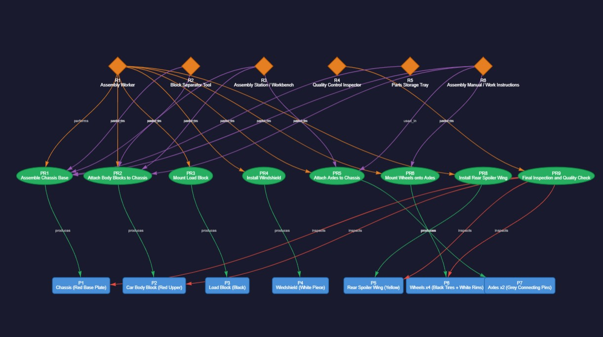
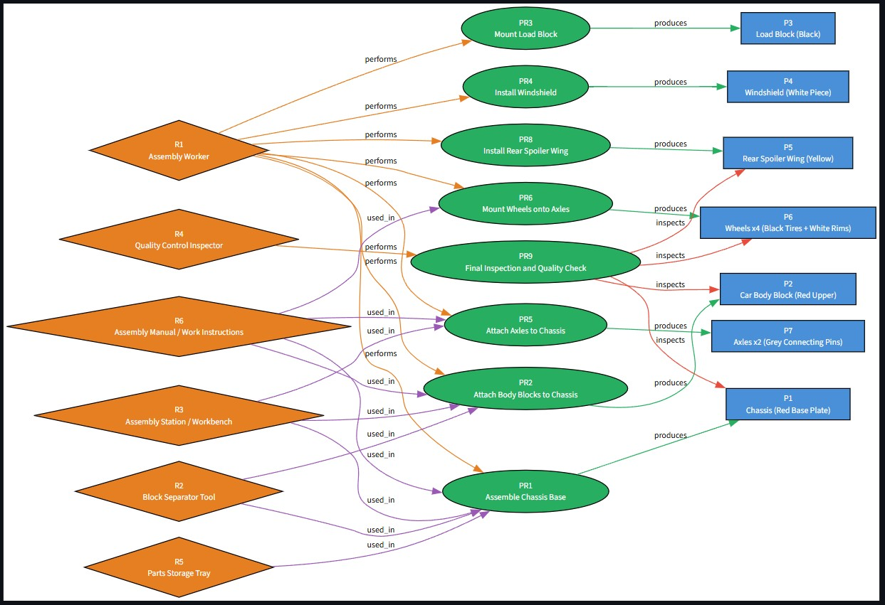
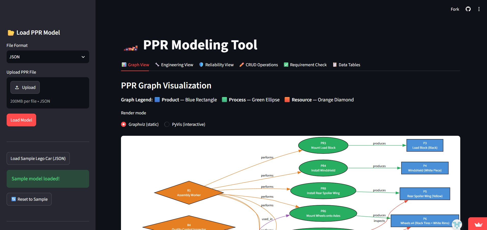

Projects / P.01 · Case study
PPR Modelling & Validation Tool
Two engineering views over one graph — with the Product–Process–Resource rules enforced when an edge is created, so an invalid model can't be built in the first place.
- Context
- Python for Production Systems Engineering — OVGU Magdeburg, Winter Semester 2025/26
- Team
- Group of two. My scope: the engineering and reliability views. The code was pushed from my teammate's account in one upload, so the commit history doesn't show who wrote which module.
- Stack
- Python · Streamlit · NetworkX · Graphviz · PyVis
One graph, many readers
A PPR model says what is produced, how, and with which resources. Those three views get read by different engineers — so the tool has to project them from one graph. Two copies would drift apart, and a drifted model is worse than no model.


The reliability view — my part
A reliability edge isn't a PPR edge. PPR structure says "this process produces that product"; a failure dependency says "if this fails, that stops working". Different relation, same nodes — which is why the view overlays them as dashed arrows instead of adding them to the graph, where they'd corrupt the rules that make the model checkable.
On the sample line: an axle failure takes out wheel mounting, a chassis failure detaches the body, a spoiler detachment stresses the chassis. The view ranks nodes by MTBF and MTTR and flags anything above 4% failure probability — which surfaces the human operator alongside the hardware, because the model doesn't privilege machines over people.

| Check | Question | Graph primitive |
|---|---|---|
| Coverage | Every product assembled by a process, every process staffed by a resource? | predecessors() |
| Propagation | If this node fails, what else is affected? | descendants() |
| Similarity | Which elements share a structural signature? | combinations() |
| Segments | Is part of the line detached from the rest? | weakly_connected_components() |
What I'd do differently
- Reliability data belongs in the model file. MTBF and failure probabilities live in a module-level table — trivial to demo, wrong for provenance. They can't be versioned with the model or supplied by whoever owns the maintenance history.
- No export. Three import formats, none out. The serialiser already exists, so it's a small change — and without it every edit dies with the session.
- Testable and untested. Keeping Streamlit out of the graph layer was worth doing because it makes those functions unit-testable. Then nobody wrote the tests.